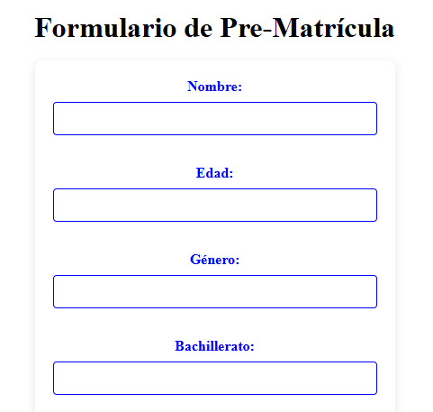
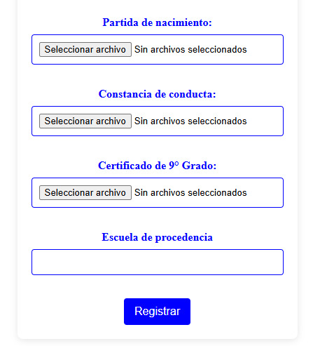

Esta es la primera parte del formulario donde están los siguientes campos:
-Nombre: Aqui colocarás tu nombre completo
-Edad: En este apartado escribiras tu edad (Solo en números)
-Género: Aqui agregarás tu género (Masculino o femenino)
-Opción de Bachillerato: Aqui escribiras la opción de bachilerato que deseas estudiar
*Bachillerato General(2 años)
*Bachillerato en Desarrollo de Software(3 años)
*Bachillerato Atención Primaria en Salud(3 años)
*Bachillerato Administrativo Contable(3 años)

En este segundo apartado del formulario van los siguientes campos:
-Partida de nacimiento: aqui agregaras una foto ya escaneada de tu partida de nacimiento
-Constancia de buena conducta: Aquí agregarás una foto ya escaneada de tu constancia de buena conducta
-Certificado de 9° grado: Como lo dice este campo se debe agregar una foto ya escaneada de tu certificado de 9°Grado
Escuela de procedencia: Aqui escribiras el nombre de la escuela en la que cursaste el 9° grado